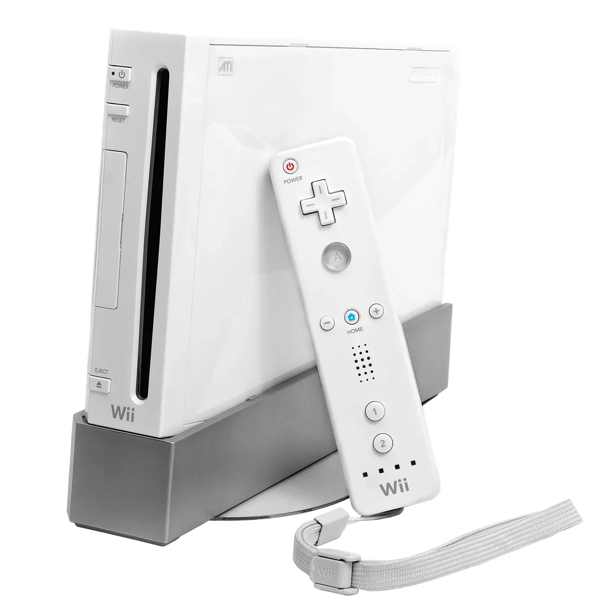

2006 年发布
Wii
任天堂Wii · 体感革命 · 吸引非游戏玩家 · 1.01亿销量
1.01亿
全球销量
729MHz
CPU主频
体感
遥控器手柄
Wii Sports
8290万份
📖 历史与背景
2006年11月19日，任天堂推出Wii，用体感遥控器（Wii Remote）革命性地吸引了非游戏玩家。Wii Remote内置加速度计和红外摄像头，可以检测手柄的空间位置和运动，让玩家用"挥拍""挥杆"等自然动作玩游戏。
Wii的成功在于蓝海战略——不去和PS3/Xbox 360拼性能，而是创造全新的游戏体验。《Wii Sports》（包含网球、棒球、高尔夫、保龄球、拳击）成为"健身游戏"，很多不玩游戏的人（尤其是老年人）也买Wii来锻炼身体。
Wii的硬件性能其实不如PS2（GPU仅支持480p，无高清输出），但体感玩法弥补了一切。Wii销量超过8200万份《Wii Sports》（通常捆绑销售），成为史上最畅销的游戏捆绑包。
⚙️ 硬件规格
CPU
IBM Broadway 729MHz
GPU
ATI Hollywood 243MHz
内存
88MB（24+64MB）
存储
512MB闪存 + SD卡扩展
手柄
Wii Remote（体感）+ Nunchuk
输出
480p（不支持高清）
向下兼容
支持GC游戏和配件
在线
WiiConnect24（待机下载）
🎮 经典游戏阵容
Wii Sports
2006 · 体感运动
8290万份，史上最畅销Wii游戏
马里奥卡丁车Wii
2008 · 赛车
3730万份，支持体感转向
Wii Sports Resort
2009 · 体感运动
3300万份，加强版Wii Sports
新超级马里奥兄弟Wii
2009 · 平台
3030万份，首款4人合作马里奥
塞尔达传说：黄昏公主
2006 · ARPG
880万份，Wii首发护航
Wii Fit
2007 · 健身
2260万份，健身板外设
任天堂明星大乱斗 for Wii
2008 · 格斗
1270万份，支持体感操作
动物森友会 城市人
2008 · 模拟
330万份，Wii版动物森友会
📦 型号演变
- Wii原版（2006）：白色，垂直放置，Wii Remote+Nunchuk
- Wii Family Edition（2011）：取消GC兼容，可水平放置，黑色/红色
- Wii Mini（2012）：红色，无在线功能，更便宜（加拿大首发）
💡 趣闻与冷知识
- Wii Remote的加速度计技术来自STMicroelectronics，成本仅$3.5
- Wii的CPU（IBM Broadway）是GC的Gekko的升级版，但主频仅从485MHz提升到729MHz
- 《Wii Sports》常作为"老年健身房"游戏，很多养老院购买Wii让患者锻炼
- Wii的GPU性能其实不如PS2，但体感玩法弥补了一切
- Wii的"蓝海战略"后来被索尼和微软模仿（PS Move和Kinect）
- Wii的《Wii Sports》销量超过8200万份，几乎每个Wii主机都捆绑了它